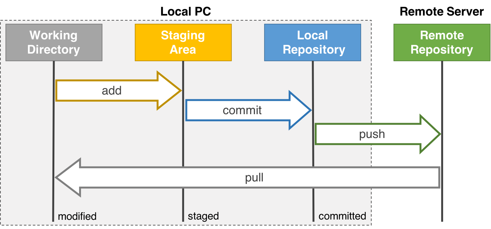
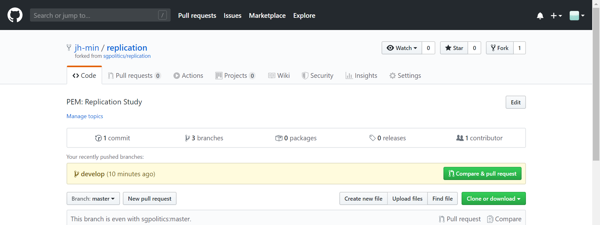
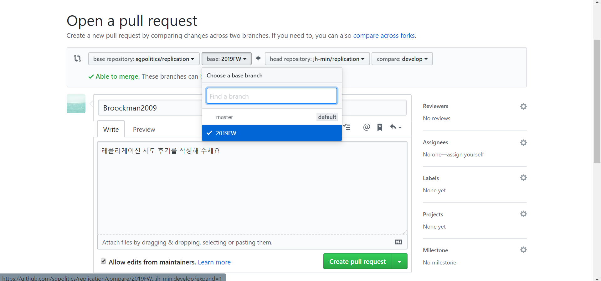
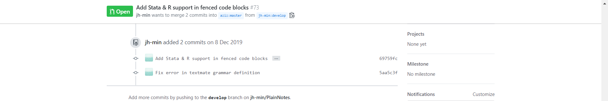

Git, GitHub와 Sublime Text 튜토리얼
이 튜토리얼에서 우리는 서브라임 텍스트 내에서 Git과 GitHub를 사용하는 방법을 학습할 것입니다. 서브라임 텍스트는 가벼우면서도 강력한 기능을 지원하는 텍스트 편집기입니다. 이제까지 코드와 문서를 작성하는 데 있어 Stata의 기본 Do-file Editor나 Windows의 메모장, 혹은 macOS의 스티커에 의존해 왔다면, 서브라임 텍스트를 시도해보세요. 과학으로서의정치학회는 Stata와 서브라임 텍스트를 함께 사용하기를 권장하고, 이 튜토리얼 역시 서브라임 텍스트로 작성되었답니다.
Git과 Sublime Text
Git 설치
- 다음의 링크에서 사용하는 OS에 맞는 Git을 설치합니다: https://git-scm.com/downloads
- Windows 사용자는 설치시
default editor만 서브라임 텍스트로 변경하세요.
- macOS 사용자는 설치 후 Terminal을 실행해 다음의 코드를 입력합니다:
sudo ln -s /Applications/Sublime\ Text.app/Contents/SharedSupport/bin/subl /usr/local/bin/subl git config --global "subl -w"
- Windows 사용자는 설치시
Sublime Text에서 Git 실행하기
- 서브라임 텍스트를 실행하여 ctrl/command+shift+p, p, c, i, Enter를 누르고 Terminus를 검색하여 설치합니다.
- ctrl/command+shift+p, t, k, b를 눌러
Preferences: Terminus Key Bindings를 선택하면, 단축키 설정 파일을 수정할 수 있는 창이 열릴 것입니다. - 다음의 코드를 복사하여 새로 열린 창의 오른쪽 탭에 붙여넣고 저장합니다:
- for Windows
[View code]
[ /* the outermost square brackets are only needed if you have never defined Key Bindings before */ // Terminus { /* open Terminus as default in new tab */ "keys": ["alt+r"], "command": "terminus_open", }, { /* toggle Terminus as default in panel */ "keys": ["alt+`"], "command": "toggle_terminus_panel", }, { /* close Terminus */ "keys": ["alt+w"], "command": "terminus_close", "context": [{"key": "terminus_view"}], }, ] /* the outermost square brackets are only needed if you have never defined Key Bindings before */
- for macOS
[View code]
[ /* the outermost square brackets are only needed if you have never defined Key Bindings before */ // Terminus { /* open Terminus as default in new tab */ "keys": ["option+r"], "command": "terminus_open", }, { /* toggle Terminus as default in panel */ "keys": ["option+`"], "command": "toggle_terminus_panel", }, { /* close Terminus */ "keys": ["option+w"], "command": "terminus_close", "context": [{"key": "terminus_view"}], }, ] /* the outermost square brackets are only needed if you have never defined Key Bindings before */
- for Windows
- 새로 열린 창을 닫습니다.
- 이제 alt/option+r을 누르면 Terminus가 실행됩니다.
- Terminus에
git --version을 입력하면 설치된 Git의 버전이 출력되는 것을 확인할 수 있습니다.
Tip
- 서브라임 텍스트는 Fuzzy Search를 지원합니다.
- Fuzzy Search는 찾고자 하는 문자열의 일부를 순서만 맞게 입력하면, 유사한 문자열들을 찾아줍니다.
- 왜 커맨드 팔레트(ctrl/command+shift+p)에 p, c, i만 입력해도
Package Control: Install Package가 최상단에 표시될까요?- Fuzzy Search로
pci를 검색하면,p와c와i가 모두 포함되어 있고, 등장 순서가p,c,i인 모든 문자열을 찾기 때문입니다. - 물론 이러한 조건을 만족하는 문자열은 하나가 아니기 때문에, 서브라임 텍스트는 추가적으로 사용 빈도나 검색된 문자가 단어의 머릿글자인지 여부 등을 고려해서 검색 결과를 정렬합니다.
- Fuzzy Search로
- 서브라임 텍스트로 폴더를 열었을 때, ctrl+p를 눌러보세요! 폴더 안의 파일들을 열 수 있습니다.
- Fuzzy Search를 활용하면, 파일명의 일부만 입력해서 효율적으로 검색할 수 있습니다.
Git과 GitHub
GitHub 가입
- GitHub에 가입합니다: https://github.com/
- 학생 개발자 팩을 신청합니다.
- 서강대학교 이메일 주소가 필요합니다.
- 학생 개발자 팩을 획득하면 결제하지 않고도 비공개 저장소를 무제한으로 생성할 수 있습니다.
- 이제 Git과 GitHub를 연동합니다:
- Terminus에 다음의 코드를 입력하여 Git과 GitHub 계정을 연동합니다(따옴표 안을 GitHub 계정명과 이메일 주소로 변경하세요):
git config --global user.name "username" git config --global user.email "user@email.com"
- Terminus에 다음의 코드를 입력하여
user.name,user.email,core.editor가 잘 설정되어 있는지 확인합니다:git config --list
- Terminus에 다음의 코드를 입력하여 Git과 GitHub 계정을 연동합니다(따옴표 안을 GitHub 계정명과 이메일 주소로 변경하세요):
Concept
- Git과 GitHub는 어떻게 구분될까요? Git은 내 컴퓨터에서 실행하는 버전 관리 시스템(Version Control System)이고, GitHub는 Git을 지원하는 웹 호스팅 서비스입니다.
- Git이 관리하는 것은 내 컴퓨터에 있는 로컬 저장소입니다.
- GitHub는 Git으로 관리하는 로컬 저장소를 보관할 수 있는 원격 저장소를 제공합니다.
- GitHub를 통해 내 저장소를 쉽게 다른 사람들과 공유하고, 협업을 수행할 수 있습니다.
- Git의 명령어들을 이용하여 원격 저장소의 변경 내역을 로컬 저장소에 반영하거나 그 역방향의 작업들을 편리하게 수행할 수 있습니다.
저장소 연동
- 학회 계정의 Replication Study용 저장소 페이지로 이동합니다: https://github.com/sgpolitics/replication
- GitHub의 저장소들은
https://github.com/username/repositoryname형식의 URL을 갖습니다.
- GitHub의 저장소들은
- 페이지 우측 상단의
fork버튼을 클릭합니다.
- 조금 기다리면, 내 계정에 학회 계정의 저장소가 포크됩니다.
- 이제 웹에 있는 내 계정의 저장소 페이지를 내 컴퓨터에 가져올 것입니다:
- Terminus에
cd "path/to/my/folder"를 입력하여 원하는 경로로 이동합시다. - 내 계정 저장소 페이지 우측 상단의
Clone or download버튼을 클릭하면, Git 명령어에 이용할 수 있는 형식의 URL을 복사할 수 있습니다.
- Terminus에 다음의 코드를 입력합니다(
username은 내 계정명이어야 합니다!):git clone https://github.com/username/replication.git
- Terminus에
- 이제
replication폴더가 나의 로컬 저장소가 됩니다(내 계정 저장소 페이지는 원격 저장소입니다). cd replication을 입력하여 해당 폴더로 이동하고,git status를 입력해봅시다.
Tip
git clone명령어는 옵션을 지정하지 않으면 원격 저장소명을 폴더명으로 사용합니다.- 다른 폴더명을 사용하고 싶다면 URL 뒤에 한 칸 띄우고 폴더명을 입력하세요.
- 폴더명에 한글이나 공백이 포함될 경우 따옴표쳐야 합니다.
git clone https://github.com/username/replication.git 'folder name'
Sublime Text에서 작업하기
화면 분할 작업 환경 구축

- ctrl/command+shift+p, p, c, i, Enter를 누르고 SendCode를 검색하여 설치합니다.
- ctrl/command+shift+p, s, c, c를 눌러
SendCode: Choose Program을 선택하고, 목록에서 Terminus를 선택합니다. - alt+shift+2 또는 command+option+2를 눌러 화면을 2열로 분할합니다.
- 왼쪽 탭을 클릭하여 ctrl/command+n을 눌러 새 파일을 만들고, 첫 행에
git --version이라고 적습니다. - 오른쪽 탭을 클릭하고, alt/option+r을 누르면 Terminus가 실행됩니다.
- 이제 왼쪽 탭을 다시 클릭하고 커서를 첫 행에 위치시킨 후, ctrl/command+Enter를 눌러봅시다.
- 오른쪽 탭에 열린 Terminus로
git --version명령어가 전달된 것을 확인할 수 있습니다.- 만약 명령어가 전달되지 않는다면, 왼쪽 탭의 문법이
Plain Text로 설정되어 있지는 않은지 확인하세요. ctrl/command+shift+p, s, s, b를 눌러Set Syntax: Bourne Again Shell (bash)를 선택하고 다시 한 번 ctrl/command+Enter를 눌러봅시다. - MarkdownEditing이나 PlainNotes 패키지를 사용 중이라면, ```로 묶은 코드 블럭에서만 ctrl/command+Enter가 작동합니다.
- 만약 명령어가 전달되지 않는다면, 왼쪽 탭의 문법이
폴더 작업 환경 구축

- ctrl/command+shift+p, p, c, i, Enter를 누르고 ProjectManager를 검색하여 설치합니다.
- ctrl/command+shift+p, m, k, b를 눌러
Preferences: Project Manager Key Bindings를 선택하면, 단축키 설정 파일을 수정할 수 있는 창이 열릴 것입니다. - 다음의 코드를 복사하여 새로 열린 창의 오른쪽 탭에 붙여넣고 저장합니다:
- for Windows
[View code]
[ /* the outermost square brackets are only needed if you have never defined Key Bindings before */ // ProjectManager { /* create new project */ "keys": ["ctrl+alt+n"], "command": "project_manager", "args": {"action": "add_project"}, }, { /* add folder to current project */ "keys": ["ctrl+shift+o"], "command": "prompt_add_folder", }, { /* open existing project with new window */ "keys": ["ctrl+alt+o"], "command": "project_manager", "args": {"action": "new"}, }, { /* close current project */ "keys": ["ctrl+alt+w"], "command": "close_workspace", }, ] /* the outermost square brackets are only needed if you have never defined Key Bindings before */
- for macOS
[View code]
[ /* the outermost square brackets are only needed if you have never defined Key Bindings before */ // ProjectManager { /* create new project */ "keys": ["super+ctrl+n"], "command": "project_manager", "args": {"action": "add_project"}, }, { /* open existing project with new window */ "keys": ["super+ctrl+o"], "command": "project_manager", "args": {"action": "new"}, }, { /* close current project */ "keys": ["super+ctrl+w"], "command": "close_workspace", }, ] /* the outermost square brackets are only needed if you have never defined Key Bindings before */
- for Windows
- 새로 열린 창을 닫습니다.
- 이제 ctrl+alt+n 또는 command+ctrl+n을 누르면, 새 서브라임 텍스트 프로젝트를 만들 수 있습니다.
- ctrl+shift+o 또는 command+o를 눌러 프로젝트에 내 로컬 저장소 폴더를 추가합니다.
- ctrl/command+k, ctrl/command+b를 누르면 사이드바를 토글할 수 있습니다.
Concept
- 서브라임 텍스트 프로젝트는 프로젝트에 포함된 폴더/파일과, 그 편집 상태를 기록합니다. 프로젝트를 열고 파일을 편집하다가 저장하지 않고 서브라임 텍스트를 종료해보세요. 프로젝트는 내가 편집하던 바로 그 상태를 기억하고 있습니다.
- ctrl+alt+p 또는 command+ctrl+p를 눌러 프로젝트 간 전환을 해보세요. 목록에서 현재 열려 있는 프로젝트는
*이 붙어 있습니다. - ctrl+alt+o 또는 command+ctrl+o를 누르면, 다른 프로젝트를 새 창에서 열 수 있습니다.
- 프로젝트를 닫으려면 ctrl+alt+w 또는 command+ctrl+w를 누르세요.
- 프로젝트명을 바꾸거나 프로젝트를 삭제하는 등의 프로젝트 관리 작업은 ctrl/command+shit+p, p, m, :를 눌러 수행할 수 있습니다.
- ctrl+alt+p 또는 command+ctrl+p를 눌러 프로젝트 간 전환을 해보세요. 목록에서 현재 열려 있는 프로젝트는
Workflow

브랜치 생성
- 서브라임 텍스트에서 내 로컬 저장소 폴더를 열고, Terminus를 실행합니다.
git branch를 입력하면, 로컬 저장소에 생성된 브랜치 목록을 볼 수 있습니다. 목록에서 현재 위치한 브랜치명에는*가 붙습니다. 저장소 생성시의 기본 브랜치명인master에 위치해 있는 것을 확인할 수 있을 것입니다.- 다음의 코드를 입력하여 원격 저장소에 있는
2019FW브랜치를 로컬 저장소에 가져옵니다:git checkout -t origin/2019FW
- 사이드바를 확인하면, 폴더에 논문과 데이터 파일이 새롭게 추가된 것을 확인할 수 있습니다.
- 이제 내가 do-file을 작성할 브랜치를 새로 생성할 것입니다. 브랜치명은 공백 없이 영문과 숫자로만 구성해야 하고, 특수문자로는 forward slash(
/)를 사용할 수 있습니다. 이 튜토리얼에서는 관례적인 브랜치명인develop를 사용할 것입니다:git checkout -b develop
Concept
- 왜
2019FW브랜치에서 작업하지 않고, 별도의 브랜치를 생성해서 작업할까요?- Stata를 사용할 때 우리는 원자료를 직접 수정하기보다, 전처리 코드를 담은 do-file을 만들어 자료의 전처리 작업을 do-file에서 진행합니다. 원자료를 그대로 보존함으로써, 혹시라도 나중에 전처리 코드에서 오류를 발견했을 때 do-file만 수정해도 되게끔 대비하는 것인데요,
2019FW브랜치 대신 새로 생성한 브랜치에서 작업하는 것도 같은 원리입니다.2019FW브랜치가 원자료,develop브랜치가 do-file이라고 생각하세요.
develop브랜치에 아무거나 파일을 하나 추가하고, 다음의 코드를 Terminus에 입력하면서 사이드바를 확인해보세요:git checkout master git checkout 2019FW git checkout develop
- Stata를 사용할 때 우리는 원자료를 직접 수정하기보다, 전처리 코드를 담은 do-file을 만들어 자료의 전처리 작업을 do-file에서 진행합니다. 원자료를 그대로 보존함으로써, 혹시라도 나중에 전처리 코드에서 오류를 발견했을 때 do-file만 수정해도 되게끔 대비하는 것인데요,
코드 작성
코드 작성 기간 동안, develop 브랜치에서 do-file을 작성합니다. 파일명은 충돌하지 않게 데이터 파일명_자신의 계정명.do으로 저장합니다.
git add, commit and push
- do-file을 작성하고, Terminus에
git status를 입력하면 현재 로컬 저장소의 파일 상태를 확인할 수 있습니다. git add filename으로 변경된 파일들을 스테이지에 추가할 수 있습니다. 이렇게 스테이지에 추가된 파일을 또 변경하면,git status를 입력했을 때 해당 파일이modified라고 표시됩니다.git add명령어에-p옵션을 추가하면, 코드를 작은 단위로 쪼개서 변경 내역 중 일부만 스테이지에 추가할 수도 있습니다: [git add -p 와 git commit -v 의 사용]- 스테이지에 추가된 파일들의 변경 내역은 아직 확정된 것이 아닙니다. 변경 내역을 확정해서, 나중에 언제든 이 변경 내역을 복구할 수 있게 하려면–즉 파일의 버전을 만들려면–
git commit명령어를 사용합니다.-m옵션을 추가해 어떤 것을 수정했는지 간단하게 기록해두면, 나중에 확인하기 편할 것입니다.- [좋은 git 커밋 메시지를 작성하기 위한 7가지 약속]
- [Git 커밋 메세지 스타일 가이드]
- [좋은 git commit 메시지를 위한 영어 사전]
git commit -m "커밋 메시지를 작성하세요"
- 혹시 커밋 메시지를 입력하면서 실수로 오타를 냈다면,
git commit --amend명령어로 직전 커밋의 메시지를 수정할 수 있습니다. 커밋 메시지를 제목과 본문으로 구분하여 작성하고 싶을 때도git commit --amend를 활용할 수 있겠네요. - 지금까지 커밋한 내역은
git log명령어로 확인할 수 있습니다. 간결하게 보고 싶을 때는--oneline옵션을, 최근 5개만 보고 싶을 때는-5옵션을 추가하면 됩니다:git log --oneline -5
- 이제 로컬 저장소의
develop브랜치에 커밋된 내역을 원격 저장소의develop브랜치에 발행합니다(origin은 내 원격 저장소의 별칭으로,git clone과정에서 자동으로 설정됩니다):git push origin develop
Tip
add,commit,push중 무엇을 해야 하는지 헷갈린다면, 우선git status를 입력하세요! Git이 무엇을 해야 할지 알려줄 것입니다.
PR 작성
- 원격 저장소에 발행한 후 내 계정의 저장소 페이지로 이동하면,
Compare & pull requests버튼이 활성화된 것을 확인할 수 있습니다.  - 버튼을 누르면, Pull Request를 작성하는 페이지로 이동합니다. 학회 계정의 저장소를 포크한 것이기 때문에
base repository는sgpolitics/replication으로 설정되어 있습니다.base는 학회 계정의 기본 브랜치인master로 설정되어 있을 텐데,2019FW브랜치를 선택하세요.  - 제목과 내용을 자유롭게 작성하세요. 레플리케이션을 시도하면서 어떤 부분이 어려웠거나, 신기했거나, 논문의 설명이 부족했다거나 하는 소감을 공유하면 좋을 것입니다.
Create pull request버튼을 누르고 학회 계정의 저장소 페이지에서Pull requests탭을 클릭하면, PR이 생성된 것을 확인할 수 있습니다: https://github.com/sgpolitics/replication/pulls
Tip
- PR을 작성한 이후에 do-file을 수정하고 싶다면, 원격 저장소의
develop브랜치에 변경 내역이 담긴 커밋을 발행하세요. GitHub가 자동으로 이미 작성된 PR에 해당 커밋을 포함시킬 것입니다: 
코드 리뷰
코드 리뷰 기간 동안, 학회 계정 저장소에 생성된 다른 참여자들의 PR을 열람하고, 다른 참여자들은 do-file을 어떻게 작성했는지 확인합니다. 코멘트는 PR에 남길 수도 있고, 코드에 line by line으로 남길 수도 있습니다.
브랜치 갱신
코드 리뷰 기간이 종료되면, 학회장이 참여자들의 PR을 2019FW 브랜치에 병합하고, 다음에 레플리케이션할 논문과 데이터를 업로드할 것입니다. 학회 계정 저장소가 업데이트되면, 내 로컬 저장소를 학회 계정 저장소와 동기화해야 합니다.
- 서브라임 텍스트에서 내 로컬 저장소 폴더를 열고, Terminus를 실행합니다.
git branch를 입력하여 현재 브랜치가2019FW인지 확인하고, 아니라면git checkout 2019FW를 입력하여2019FW브랜치로 이동합니다.- 학회 계정 저장소의 별칭을
upstream으로 설정합니다. 이 작업은 최초에 한 번만 수행하면 됩니다:git remote add upstream https://github.com/sgpolitics/replication.git
- 이제 내 로컬 저장소에 학회 계정 저장소의 업데이트 내역을 가져옵니다:
git fetch upstream
- 학회 계정 저장소의
2019FW브랜치 업데이트 내역을 내 로컬 저장소의2019FW브랜치에 병합합니다:git merge upstream/2019FW
- 내 로컬 저장소의
2019FW브랜치 업데이트 내역을 내 원격 저장소의2019FW브랜치에 발행합니다:git push origin 2019FW
- 이제 do-file을 작성하기 위한
develop브랜치로 이동하고, 내 로컬 저장소의develop브랜치에 내 로컬 저장소의2019FW브랜치의 업데이트 내역을 병합합니다:git checkout develop git merge 2019FW
- 이제 코드 작성, 코드 리뷰 단계를 반복합니다.
Git, GitHub와 Sublime Text 튜토리얼 Advanced
Terminus로 Git 작업을 빈번하게 수행한다면, git log --oneline과 같은 명령어를 일일이 입력하는 것은 지루합니다. 자주 사용하는 명령어들을 별칭(alias)으로, 로그를 보기 위해서는 그저 gl만 입력해도 충분하다면, 생산성은 훨씬 높아질 것입니다. 또한 로컬 저장소에서 여러 브랜치를 넘나들며 작업하거나 여러 로컬 저장소를 관리해야 한다면, 현재 내가 작업하고 있는 저장소와 브랜치를 시각적으로 두드러지게 하는 편이 실수를 줄일 수 있을 것입니다. 한 번 입력했던 명령어가 자동완성이 된다면 어떨까요? git status를 입력하지 않고도 현재 위치한 저장소의 파일/폴더 상태를 알 수 있다면요? 커맨드 라인 인터페이스(CLI)가 흑백으로 가득한 단조로운 화면과 불편하기 짝이 없는 사용법을 의미한다는 편견은 더 이상 성립하지 않습니다–21세기인걸요.